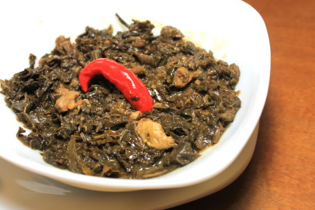
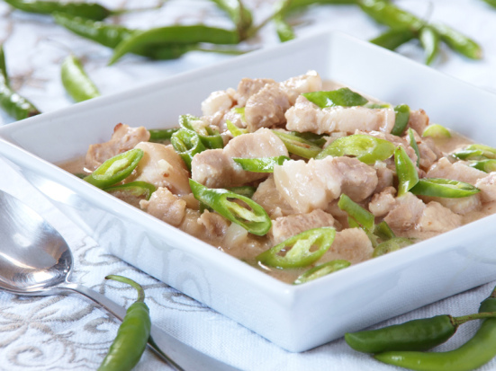

Pork Dinuguan
This is the one of my favorite dish, the Pork Dinuguan I like it because it taste like porky and savory.

This dish is rather similar to European-style blood sausage, or British and Irish black pudding in a saucy stew form. It is perhaps closer in appearance and preparation to the Polish soup Czernina or an even more ancient Spartan dish known as melas zomos (black soup) whose primary ingredients were pork, vinegar and blood. Dinuguan can also be served without using any offal, using only choice cuts of pork. In Batangas, this version is known as sinungaok. It can also be made from beef and chicken meat, the latter being known as dinuguang manok ('chicken dinuguan'). Dinuguan is usually served with white rice or a Philippine rice cake called puto. The Northern Luzon versions of the dish, namely the Ilocano dinardaraan and the Ibanag zinagan are often drier with toppings of deep-fried pork intestine cracklings. The Itawes of Cagayan also have a pork-based version that has larger meat chunks and more fat, which they call twik.
Laing
This Laing one of my favorite vegetable dish, I like the creamy sauce and spicy taste.
Laing is considered to be a staple in most Bicolano homes. This laing recipe is simple-to-follow and uses readily-available ingredients from the grocery. Making it at home is easy and fuss-free! You could adjust the taste accordingly by adding more shrimp paste or chili peppers. Substituting the pork slices with dried fish is also a healthy alternative to this dish.
Sinigang na baboy
This one of my favorite dish, I like it because of the sour taste and I want to partner with Patis.

Sinigang is a Filipino meaty soup that is known for being sour and savory, and sometimes spicy. Serve it with rice and it is a complete meal on its own. There are, of course, different ways to prepare it and has a lot of variations.
Bicol Express
I like this dish beacuse of the spicy taste and ginataan taste.
The mild sweetness of coconut milk brings a sense of delight to the sharp notes of chili pepper and bagoong in the classic Bicol Express recipe. This contrast has long created a spell-binding richness in taste for the dish. And this has helped make it arguably one of the most popular Filipino dishes.